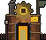
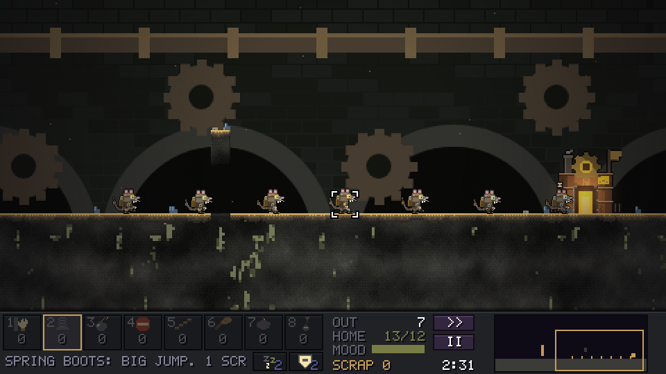
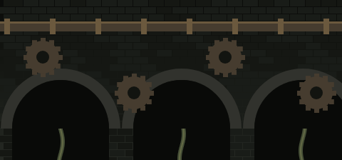

From the journals of the wandering scholar
Of the Ratfolk
Home: Clockwork sewersLed by: The Chief EngineerSubstance: ScrapClans: Gearnose and Sewerclaw
The Ratfolk build fast, breed faster, and forgive nothing at all.
The tin sheds go on further than the eye can follow and are stacked higher than they ought to stand. There are more Ratfolk in one district than Dwarves in a dozen holds, and every one of them moves as though late.
A Ratfolk tinker sold me a lamp that worked. The one beside it, he said, also worked, at first. Their Chief Engineer holds power because the last one does not, and the cranes over the main yard lift more than scrap. Nobody spoke of this. Everybody looked.
Clan comes before everything here, including sense. I watched two Ratfolk of different clans refuse to share a ladder during a fire. A gadget by the gate went off as I left, quite by itself. The Ratfolk nearest it did not look up.
Ratfolk live in large, crowded communities and outnumber many races, including the Dwarves. Short lives mean they always need numbers.
Leadership is centralised and ruthless: power is seized, not inherited, and kept through fear and violence. Where Goblin rulers depend on cunning, Ratfolk rulers depend on terror.
Clan loyalty comes first, and betrayal can mean death. They scavenge scrap to build devices that do not always work.
Not yet settled: what the Clockwork Sewers are and whose sewers they were, what the Chief Engineer looks like, and where Ratfolk live on the globe.
As observed in Marching Orders
| In short | Scurrying inventors |
|---|---|
| Good at | Very fast, chew through wood |
| Bad at | Gadgets need scrap, and backfire |
| Own skills | Spring boots (big jump. 1 scrap. risky), Rat mine (blasts rock. 2 scrap. risky) |
| Clans | Gearnose: +1 rat mine if map has it; Sewerclaw: +2 starting scrap |


site/img/journal/race-rat-study.webpDo not stand under the cranes.
They chew the props of their own sheds when nervous. Everything here leans.


site/img/journal/race-rat-home.webp